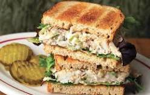

Tuna Sandwich

Tuna Sandwich is a sandwich usually made from canned tuna, adding in a salad.
Ingredients
- 1 can tuna
- 2 tbs mayo
- 1 pinch salt
- 1 tspn balsamic vinegar
- 1 tspn dijon mustard
- 2 slices whole wheat bread
- 2 tspn chopped dill pickle
- 1/4 cup shredded sharp Cheddar Cheese
Steps
- Preheat oven to 375 degrees F
- Place bread slices in oven to toast
- Mix tuna, mayo, salt, vinegar, mustard, dill pickle into a small bowl
- Remove bread from oven and place mixture onto bread
- Bake for 7 minutes
Go back home